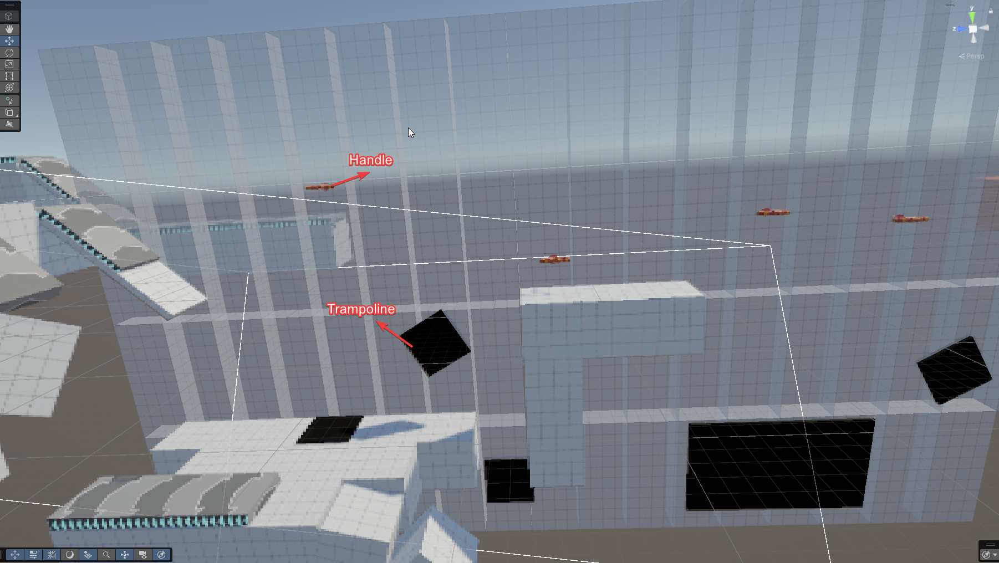
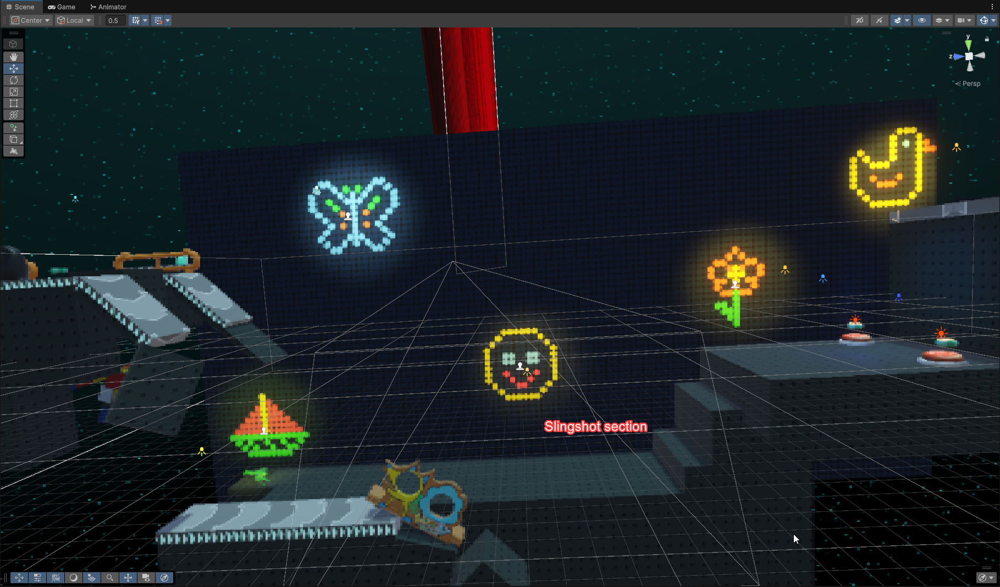

My Role
- 3C Design (Slinky abilities, character feel, movement, camera point of view)
- Blocking and Designing levels
- LDO Prototyping for fast and iterative testing of the second level's mechanical twists
Technical Overview
Technical Overview Video Link [Missing link]Preproduction Documentation
Documentation excerpts created during the conception phase: controls, slinky abilities, LDO list, and 2D plans for possible levels.
 Early concept, gameplay loop and initial pitch.
Early concept, gameplay loop and initial pitch.
 Controls, list of LDOs & their behaviours.
Controls, list of LDOs & their behaviours.
 Basic 2D level plans for different ways to use the slinky in the level design.
Basic 2D level plans for different ways to use the slinky in the level design.
Design Approach
3C Design
In order to fully exploit the premise of this game, our first had to determine which capabilities of the slinky we could achieve within the competition's time constraint.
Many of these possible slinky abilities I proposed are showcased and put to use in the above preproduction documentation for planned levels. In the end, we landed on two main abilities :
- The "slingshot", an bility allowing players to launch themselves using the spring's force in order to reach otherwise inaccessible heights.
- The "rebound", a force that would fling players in the direction of their partner if they stretched too far while hanging onto a wall.
 An example of players executing the "slingshot" ability.
An example of players executing the "slingshot" ability.
However, in order to allow this movement, players needed the ability to create and release tension in the slinky, leading to the addition of jumping and biting, the latter allowing players to latch onto any surface. Consequently, the project needed a camera angle that could clearly show the depth and height of the play space. We initially experimented with fixed camera angles similar to older Resident Evil titles, but the camera transitions created too much friction.

I therefore pitched the idea for a camera inspired by Super Mario: 3D World, showing the entirety of the immediate play space without interruption. This decision moved us away from the competition's retro themes, but it was more than a worthwhile tradeoff for a consistent and reliable viewpoint. To counterbalance this shift, the environments had to strongly reflect the "toy commercial" theme developed alongside the slinky concept.


Level Progression
In order to differentiate the levels, I designed the second level with the use of unique LDOs, mainly conveyor belts and trampolines, but additional ones programmed by myself as well.
As onboarding, conveyor belts are first introduced without immediate danger.

Players are then transported to a second, more dangerous section of conveyor belts where the paths split in order to encourage risk-taking and cooperation.

In the background, another conveyor transports candies, foreshadowing an upcoming challenge.
Throughout the level, the complexity of conveyor-related challenges progressively increases as to test the player on acquired knowledge of the slinky and LDOs at play, while always providing something new in each new encounter.

After that, players were finally going to make use of the rebound in this pseudo-2D section where the players used Handles (designated by orange bars here) to let their friend hang and rebound to the other side. Initially, this didn't work because the rebound functionality was made non-fuctional with the addition of the "slingshot" ability. And so, I made to use of trampolines (designated by black parts) in a different way: I stuck them to walls and had players hug them in order to give them a vertical boost to get across.

Unfortunately, with how the player controlled worked, the slinky simply couldn't be reliably or consistently used by players to get across to the other side, even with the use of trampolines, so I had to cut the section and instead replace it with a more perilous fall, and a slightly more advanced version of the "slingshot", in which players must perform it twice in a row.

In this example, conveyor belts move obstacles towards the players while they must avoid tangling their slinky as they progress. This is one of the very last conveyor belt obstacles of the level, since it requires more coordination than previous ones.
Conclusion
This is the iterative approach to level design and escalation I strive for in my own work. When I see an opportunity to combine existing systems to create something more interesting, I use my prototyping skills to actually test its feasibility. The conveyor belt sequence above is a good demonstration of this process and the final result.
Project Description
In this game, two players two players control the ends of a toy connected by a slinky.
Players must learn to overcome levels by using the spring's tension to their advantage, even if it also comes with disadvantages.
Developed as part of the Ubisoft Game Lab 2026 competition, the project had to be playable with a minimum of two players and use only the D-Pad alongside two face buttons of an Xbox controller, in the spirit of the imposed theme: the 80s and 90s.
Nominations
As well as winning Best Prototype, the game was nominated for :Game Excerpts